Вселенная Digital Humanities
вводная лекция минора "Цифровые методы в гуманитарных науках"
План на сегодня
- Кто я такой, кто вы такие и как мы будем общаться📱
- Чему вы научитесь на этом курсе 💻
- Вселенная Digital Humanities: что в ней делают, как и зачем? 🔭
- Где живут "цифровые гуманитарии" 🦄
- Выходные🥤
Меня зовут Даня, это я:
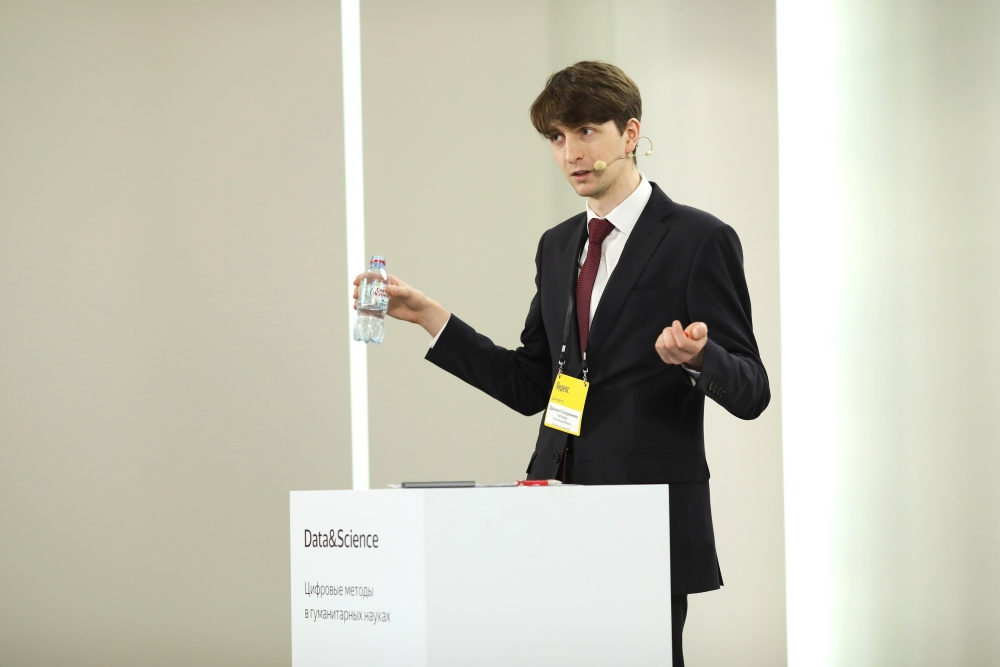Я отсюда:

Кто я такой
- Компьютерный лингвист (умею в Natural Language Processing)
- Окончил комплингвистику в Вышке
- Делал извлечение информации из текстов в ABBYY
- Цифровой литературовед
- Диссертация по цифровым подходам к исследованию «Войны и мира»
- Со-основатель проекта rus.dracor.org
- Программирующий гуманитарий (т.е. занимаюсь Digital Humanities)
Где и что я делаю

Теперь немного о вас!
Что будет на курсе?
Чем мы займемся на этом курсе
- Обсудим, что меняет «погружение культуры в цифру»: какие новые способы исследования у нас появились — и что они могут дать
- Изучим несколько методов/инструментов цифровых гуманитарных исследований
- Вы поделаете собственные мини-исследования
Структура курса
Раньше это был полугодовой курс
'Введение в цифровые гуманитарные исследования'
Но потом...

Что будет в "части 1" (модуль 3)
| Дата | Тема |
|---|---|
| 6 февраля | Вселенная Digital Humanities: что в ней делают, как и зачем |
| 13 февраля | Distant Reading ("Дальнее чтение") и корпусные методы вне лингвистики |
| Дата | Тема |
|---|---|
| 20 февраля | Стилометрия (статистическая атрибуция авторства): почему это работает и к чему можно применить |
| 27 февраля | Стилометрия: больше практики в stylo, продвинутые возможности, |
| 6 марта | Ваши презентации групповых исследований №1 |
| Дата | Тема |
|---|---|
| 13 марта | Сетевой анализ в гуманитарных науках |
| 20 марта | Сетевой анализ в гуманитарных науках |
| Зачетная неделя | Ваши презентации групповых исследований №2 |
Некторые пары проведет Франк Фишер

Оценка за курс
0,5 * первая презентация + 0,5 * вторая презентация
Как происходит ваша работа
- Вы объединяетесь в команды по 3-4 человека
- И делаете мини-исследование:
- Идея
- Сбор данных
- Анализ
- Интерпретация и презентация
- При анализе нужно применить какой-то из изученных методов (можно сразу несколько)
Исследования прошлых лет можно посмотреть
Как мы с вами будем общаться
- Ссылки на презентации будут на странице курса: danilsko.github.io/dhminor2021
- Ссылки + обсуждения — чат в телеграме: Кликни чтоб добавиться
- Плюс старый добрый email: skorinkin.danil@gmail.com; vaganeeva@edu.hse.ru
Теперь наконец о Digital Humanities
Потому что именно этим мы тут и будем заниматься
Зачем нужно это занятие?
- Посмотреть, что есть внутри Digital Humanities?
- Cистематизировать главные направления
- Понять, куда смотреть и за чем следить
- Понять примерный контент курса (я буду обращать внимание на то, что будем проходить мы)
А кто слышал про Digital Humanities?
До того, как узнал про этот курс
Digital Humanities
или …Digital Humanities — о том
…что могут информационные технологии в
- филологии (литературоведении)
- культурологии
- исторической науке
- ...далее везде!
Digital Humanities

Digital Humanities как сумма маргиналий
Важные направления:
- Поиск закономерностей, "трендов" в больших массивах произведений культуры — "масштабированиe" Humanities
- Использование цифровых инструментов для анализа единичных произведений — "моделирование" в Humanities
- Визуализация и новые формы передачи гуманитарного знания — "публичные" Humanities
- Оцифровка культурного наследия и электронные архивы — цифровое сохранение
"масштабированиe" Humanities
Поиск закономерностей и "культурных трендов" в коллекциях...
- ...художественных текстов («Distant Reading»)
- ...любых текстов — для изучения динамики культуры и общества («Culturomics»)
- ...медиаконтента, в т.ч. пользовательского («Cultural Analytics»)
- ...изображений («Visual Analytics») и видео («Distant Viewing»)
- ...музыки и звукозаписи
- ...археологических находок
- ...геоданных (например, исторические GIS)
Идея "Дальнего" чтения (Distant Reading)

“[...] we know how to read texts, now let’s learn how not to read them. Distant reading: where distance, let me repeat it, is a condition of knowledge”
Пример Distant Reading в "Корпорации стиля" Ф. Моретти
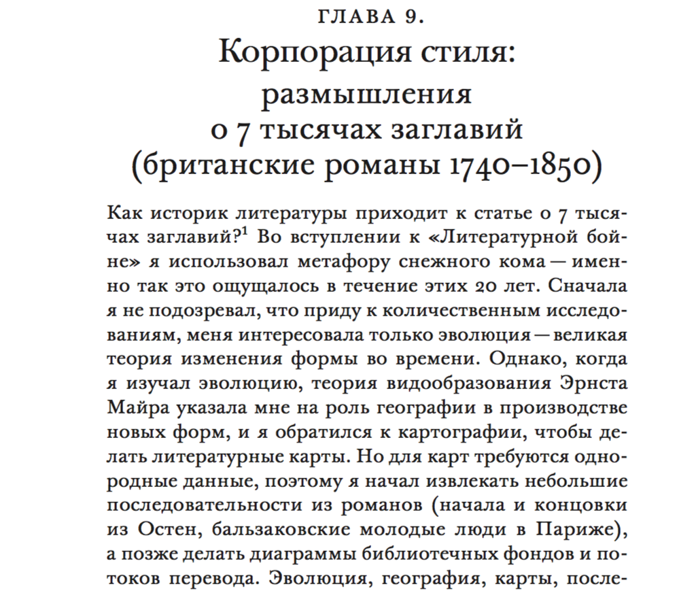Женщины в заглавиях обретают фамилии
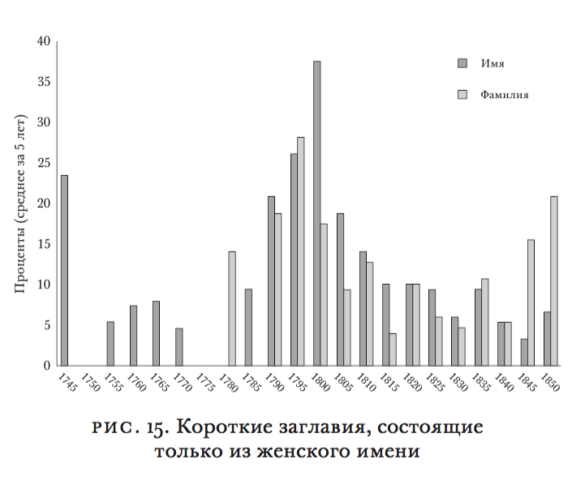«<...>героиня приобретала общественное положение, сразу отражающееся в названиях вроде «Джейн Эйр» или «Мэри Бартон». Обратите внимание, как много может быть сделано в коротких заглавиях благодаря небольшим вариациям: одно слово — и образ героини переворачивается на 180 градусов: от частного к публичному. Короткие названия были ограничением, навязанным рынком, да, но ограничение могло также стать замечательной возможностью для литературного воображения: искусство намека, сжатости — в конце концов заглавие становилось тропом».
Пример «Distant Reading»: меньше морализма, больше экшена
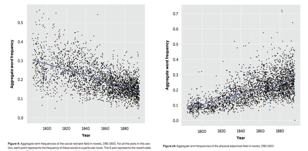Пример «Distant Reading»: затихание романа

Кстати, не обязательно делать Distant Reading профессиональной литературы
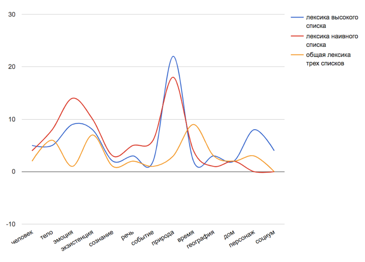Пример «Culturomics» в Google Books
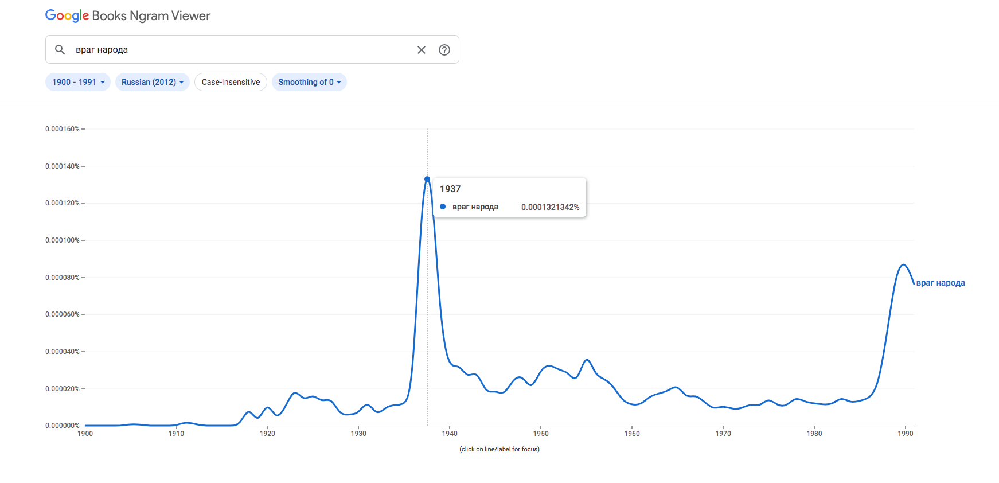Google Books & Culturomics
'We constructed a corpus of digitized texts containing about 4% of all books ever printed. Analysis of this corpus enables us to investigate cultural trends quantitatively
. We survey the vast terrain of “culturomics”, focusing on linguistic and cultural phenomena <...>'Пример «Culturomics» в Google Books
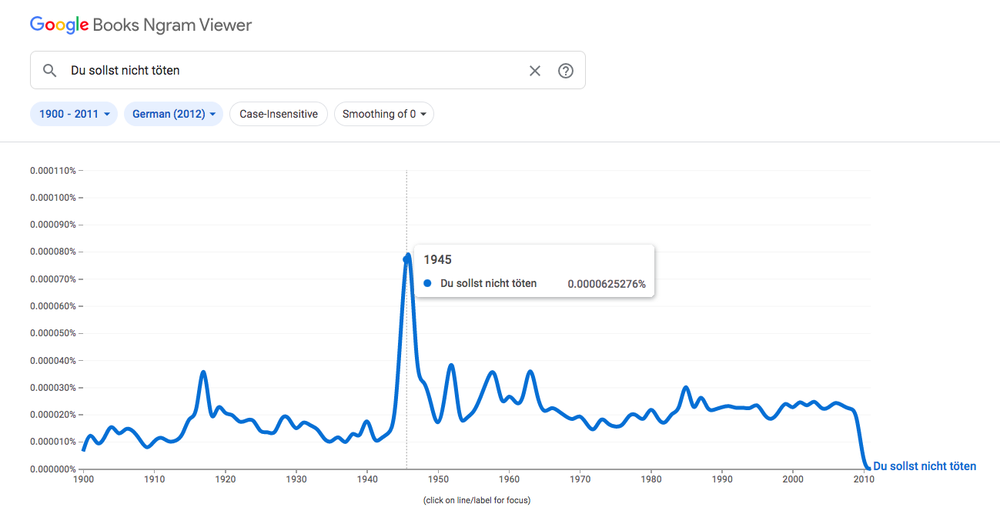Пример «Culturomics»: темы в дневнике
- Марта Баллард, акушерка из штата Мэн, вела дневник с 1785 по 1812 год
- За это время она приняла 816 родов и сделала около 10000 записей в дневнике
- Историк Кэмерон Блевинс исследовал дневник количественными методами
В т.ч. с помощью тематического моделирования
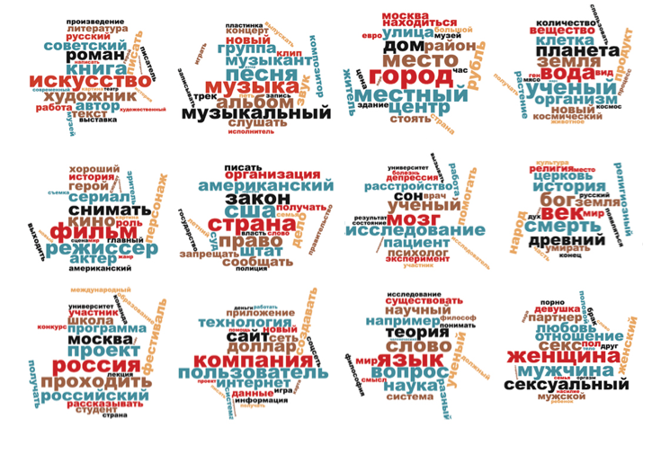Темы в дневнике
- MIDWIFERY: birth deld safe morn receivd calld left cleverly pm labour fine reward arivd infant expected recd shee born patient
- CHURCH: meeting attended afternoon reverend worship foren mr famely performd vers attend public supper st service lecture discoarst administred supt
- DEATH: day yesterday informd morn years death ye hear expired expird weak dead las past heard days drowned departed evinn
- GARDENING: gardin sett worked clear beens corn warm planted matters cucumbers gatherd potatoes plants ou sowd door squash wed seeds
- SHOPPING: lb made brot bot tea butter sugar carried oz chees pork candles wheat store pr beef spirit churnd flower
- ILLNESS: unwell mr sick gave dr rainy easier care head neighbor feet relief made throat poorly takeing medisin ts stomach
Погода

Gardening

Кстати о дневниках
Попытка анализа тональности корпуса "Прожито"
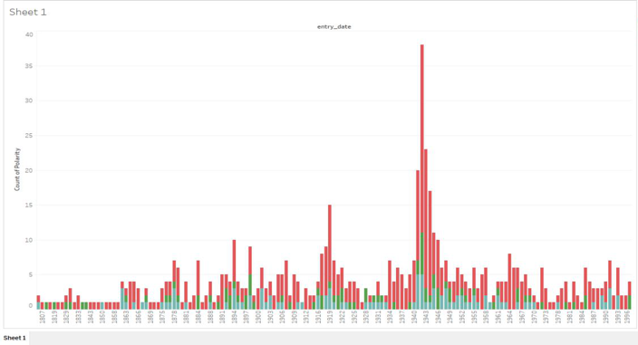Cultural Analytics: эволюция летних хитов
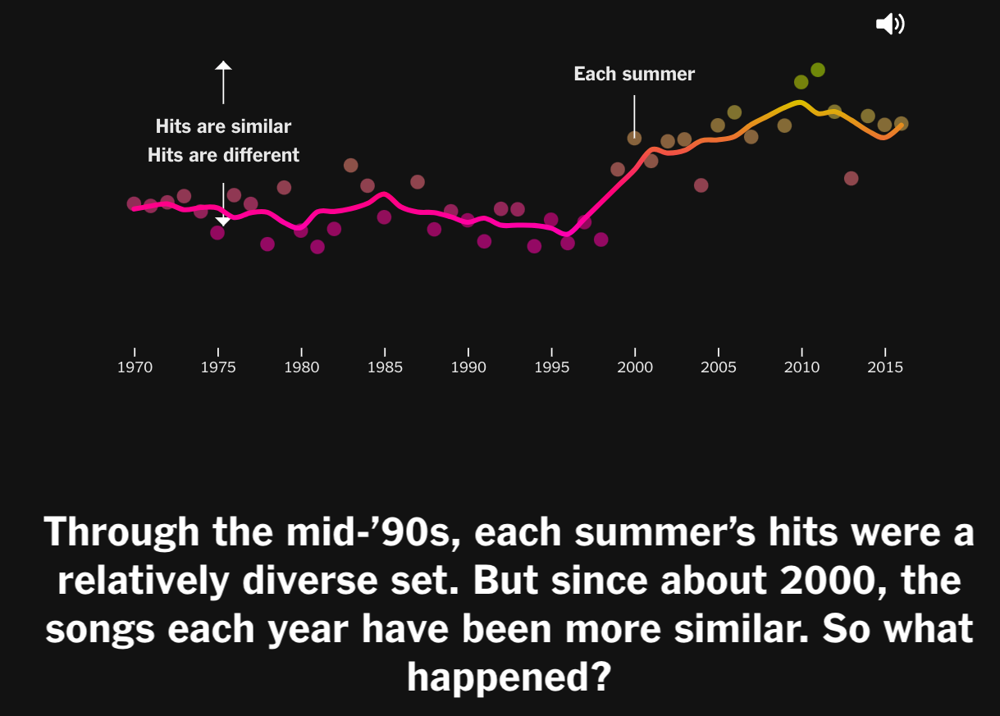Cultural Analytics: популярность vs престиж
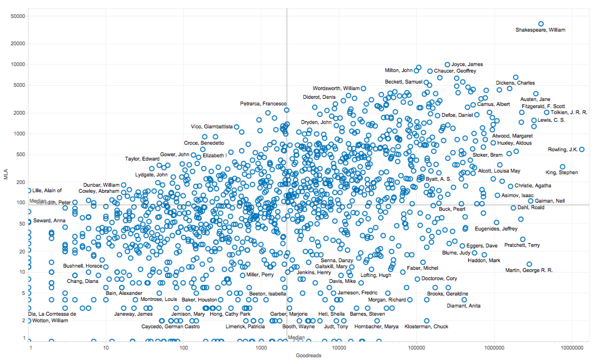Visual Analytics: 137 тыс. картин с WikiArt

Меры энтропии и сложности

137 тыс. картин с WikiArt

137 тыс. картин с WikiArt

Distant Viewing: длина и динамичность кадра

Distant Viewing: освещенность кадра
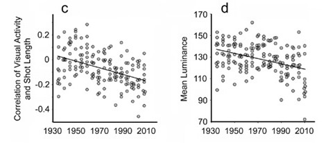Кстати, и кинопостеры тоже темнеют (еще немного Cultural Analytics)

"Моделирование" в Humanities
Стилометрия

Голоса в романе "Идиот"
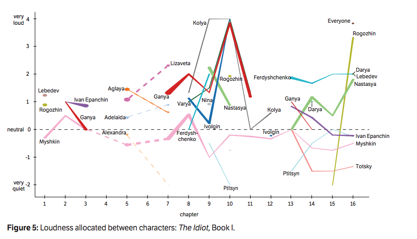Сетевой анализ

Сетевой анализ
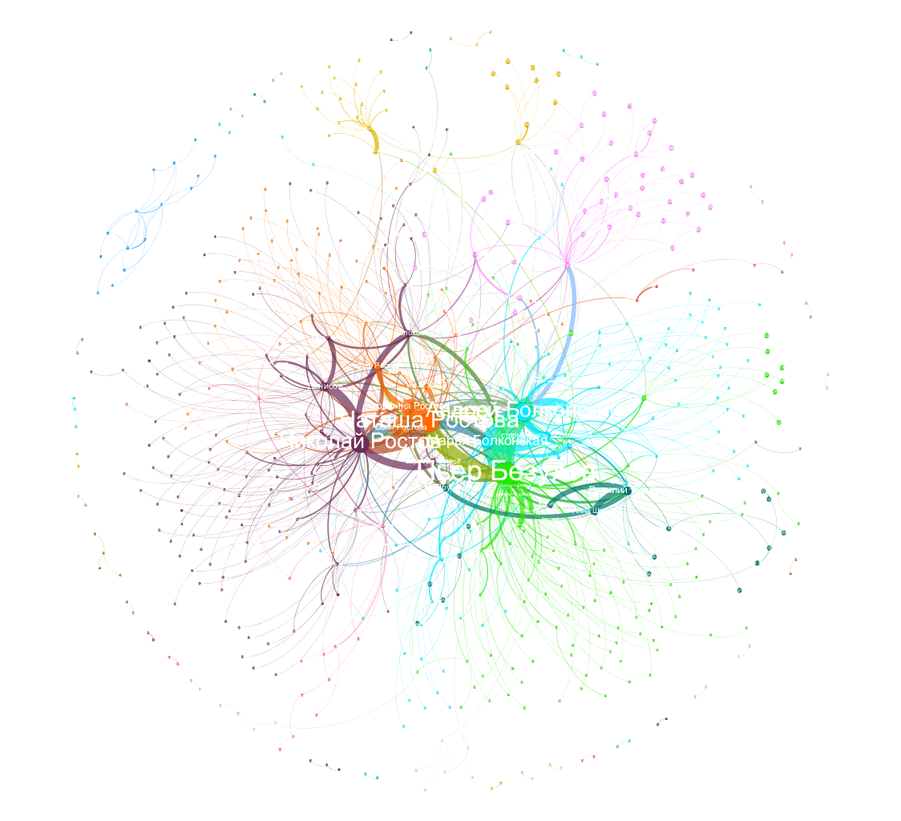Из диссера Д.А. Скоринкина
Сетевой анализ

Чем хороша сеть (граф) как модель?
- Универсальность применения
- Наглядность: многое видно глазами без подсчетов и интуитивно понятно
- Объективность: за этим «видно глазами» всегда стоят цифры
Например, центральности в сетях

| Узел | Центральность (степень, degree) |
|---|---|
| Даня | 5 |
| Таня | 1 |
| Ваня | 1 |
| Нафаня | 1 |
| Дуня | 1 |
Визуализация

Центральность по посредничеству (betweenness centrality)

Центральность по посредничеству (betweenness centrality)

Социальная сеть пьесы А.С. Пушкина "Борис Годунов"

Пушкин на посылках

Есть ли другие такие же?
Битяговский в «Смерти Иоанна Грозного» А. К. Толстого (двойной агент)

Калачник в «Дмитрие Самозванце» А.Н. Островского (шпион/агент Шуйского)

Немного о Калачнике
Калачник:Что я-то?! Я не сыщик, не доносчик;
Я — весь народ московский; вот кто я!
Немного о Калачнике
«Довольно загадочной кажется фигура Калачника, темпераментно сыгранного Антоном Хомятовым: с одной стороны, это человек из народа — поборник православной веры, мститель за брата, с другой — «человек в штатском», тайный агент Шуйского, провокатор и шпион. Похоже на то, что его торговля калачами только «прикрытие». Один раз за весь спектакль мы видим лоток на его плече, да и то пустой. Калачник называет себя «народом», но он, пожалуй, ох как непрост?»
Битков (соглядатай/двойник Пушкина)

2. Структура сообществ в сетях
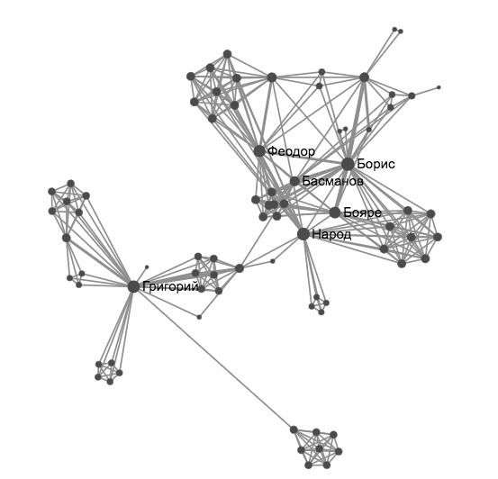выход обратно на масштабирование

Жанры пьес — и плотности сетей


Плотность = 0.5 (3/6) Плотность = 1 (6/6)
Плотности комедии и трагедии отличаются

Плотности комедий и не-комедий в RusDraCor

Сети можно сочетать с картами (GIS)

Проект Mapping the Republic of Letters
Исследование потребления визуальных произведений

Айтрекер


Визуализация, распространиение, популяризация гуманитарного знания
- Цифровые издания
- GIS как метод представления исторических знаний
- Виртуальная, дополненная, смешанная реальность (музеи, педагогика)
- Всякая гуманитарная инфографика
Виртуальные музеи
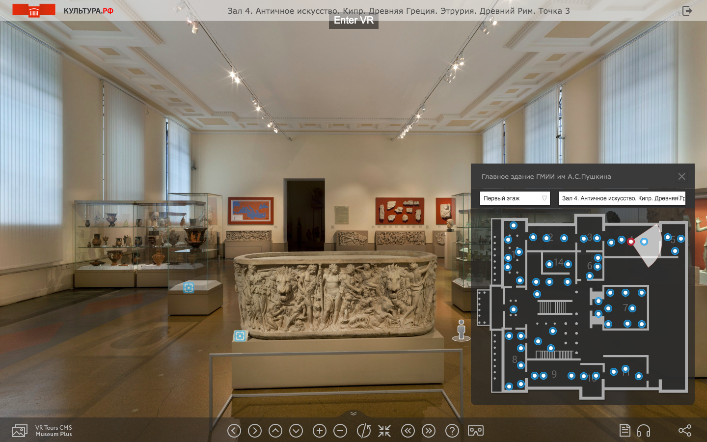Музеи с дополненной реальностью

VR в DH начали обсуждать на конференциях

Геоинформатика (GIS) и гуманитарии

The Digital Atlas of Roman and Medieval Civilizations
Геоинформатика (GIS) и гуманитарии
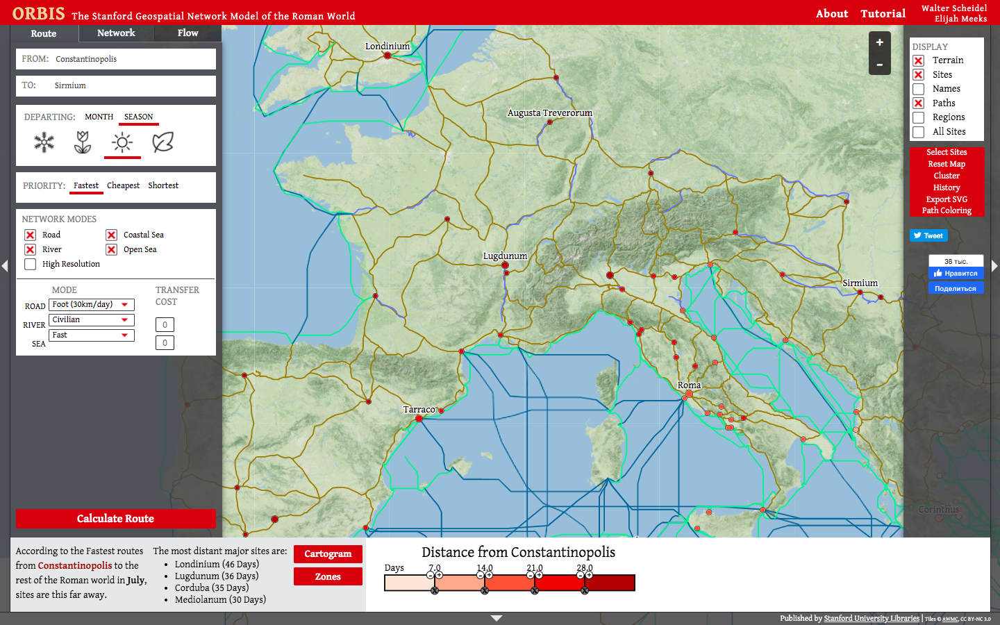ORBIS
GIS и гуманитарии

GIS и гуманитарии

GIS и гуманитарии

Цифровые издания

Цифровые издания

Цифровые издания

Оцифровка культурного наследия
- Цифровые архивы
- Форматы и стандарты представления гуманитарных данных в машиночитаемом виде (TEI, базы данных, LOD)
- Краудсорсинг для оцифровки
- OCR (оптическое распознавание символов)
- 3D-модели культурных памятников
OCR (оптическое распознавание символов)

Оцифровка рукописного текста

См. Transcribus
Краудсорсинговая оцифровка

Стандарт машиночитаемого текста в гуманитарных областях

Text Encoding Initiative (TEI/XML)
Цифровая консервация в археологии

3D-моделирование объектов культурного наследия
Цифровая эпиграфика (сейчас пытается зародиться в Вышке)
короче, целая вселенная очень разных штук
А стоит ли вообще говорить про какие-то отдельные Digital Humanities?
Вот какие определения Digital Humanities дают сами цифровые гуманитарии
Using computational tools to do the work of the humanities
The use of digital tools and methods in humanities study and dissemination.
DH is inquiry enabled by digital methodologies or modes of research, dissemination, design, preservation, and communication that rely on algorithms, software, and/or the Internet network for processing data.
В этом же духе определение из Википедии:
Digital humanities (DH) is an area of scholarly activity at the intersection of computing or digital technologies and the disciplines of the humanities.
Но никто же не говорит про «цифровую физику»?

В гуманитарных науках при переходе к цифровым методам происходит более глубокий сдвиг
Digital Humanities is the integration of sophisticated, empirical techniques utilizing tools and technologies typically associated with practical sciences into the study of traditional humanities questions. It represents a more exploratory and less quantitative approach than social sciences in the use of such tools, but it also represents ambitious attempts to model nuanced human wisdom in ways that, like early flying machines, are beautiful, quite impractical and often fail.
Это качественный сдвиг
Это качественный сдвиг
- Гуманитарии почти не говорили на формальных языках — теперь нужна дискретность
- У гуманитариев много неоднозначности — компьютеры требуют однозначности
- Гуманитарии редко производили "продукты" и "проекты" — в Digital Humanities это стандарт
DH is at its best when it embraces the digital not simply as a means to the traditional ends of scholarship, but when it transforms the nature of what humanists do. The digital allows for scholars, librarians, archivists, and curators to engage much more directly with each other and the public. Further, it allows them not simply to write for each other, but to build things for everyone.
The Digital Humanities is both a field with a discernable set of academic lineages, practices, and methodologies and a vague umbrella term used to describe the application of digital technology to traditional humanistic inquiry. Ultimately, what sets DH apart from many other humanities fields is its methodological commitment to building things as a way of knowing.
DIY-humanities
We don’t just make for the humanities, we just make. [...] One of the defining features of some of the best and the brightest in the digital humanities isn’t digital per-say, it has to do with a pervasive kind of scrappyness. It’s about having a do it yourself mindset.
DIY-humanities
Цифровые гуманитарные науки — это область исследований, обучения и созидания, созданная на стыке компьютерных и гуманитарных наук.
A kind of scholarship that requires design, management, negotiation, and collaboration.
«Коммунальность» Digital Humanities
Коммунальные определения Digital Humanities
It is both a methodology and a community.
A “community of practice” (to borrow Etienne Wenger’s phrase) whereby the learning, construction, and sharing of humanities knowledge is undertaken with the application of digital technologies in a reflexive, theoretically informed, and collaborative manner.
Коммунальные определения Digital Humanities
The phrase [digital humanities] has use-value to the degree that it can serve as an umbrella under which to group both people and projects seeking to reshape and reinvigorate contemporary arts and humanities practices, and expand their boundaries.
Закрывая дискуссию: а нужны ли вообще определения?
I think digital humanities, like social media, is an idea that will increasingly become invisible as new methods and platforms move from being widely used to being ubiquitous. For now, digital humanities defines the overlap between humanities research and digital tools. But the humanities are the study of cultural life, and our cultural life will soon be inextricably bound up with digital media.
Digital Humanities — это просто удобный лейбл, "временная переменная"
A name that marks a moment of transition; the current name for humanities inquiry driven by or dependent on computers or digitally born objects of study; a temporary epithet for what will eventually be called merely Humanities.
А term of tactical convenience
Но не стоит недооценивать convenience!

Типичная команда DH-проекта: математики, филологи, программисты, лингвисты, преподы, инженеры...
Никогда бы не собралась, если бы не было "зонтика DH" ☂️
Digital Humanities как комьюнити
Где обитают цифровые гуманитарии?
Журналы
Конференции
- Ежегодная мировая конференция альянса ADHO
- Digital Humanities in the Nordic countries (конфа, на которой сварили DH-пиво!)
- Digital Humanities im deutschsprachigen Raum
- LaTeCH/Clfl (отпочковалось от комплингвистики)
- Другие компьютерно-лингвистические площадки
- Всякие Digital Libraries конференции
Соцсети
- TWITTERRR1111111!!!!
- и еще Twitter
См. например, по хэштегу
Есть несколько исследований Twitter-сообщества DH

- Была мощная конференция DH Russia 2017
- Тогда официально запустилась российская ассоциация DH (входит в ADHO через EADH)
- DH-центр и магистратура в Вышке
- DH-центр и магистратура ИТМО (лучший инстаграм в русских DH!)
- DH-магистратура в пермской Вышке
- DH-центр в БФУ (Калининград)
- DH-магистратуры в ТГУ (Томск), ЮФУ (Ростов), СФУ (Красноярск)...
А что в России?
А теперь ознакомительный опрос
не на оценку!
Напоминалка: коммуникация
- Ссылки на презентации и записи — на странице курса: danilsko.github.io/dhminor2021
- Ссылки + обсуждения — чат в телеграме: Кликни чтоб добавиться
- Если вдруг не получается — можно писать на почту vaganeeva@edu.hse.ru или телеграм @NikaGaneev, Ника вас добавит